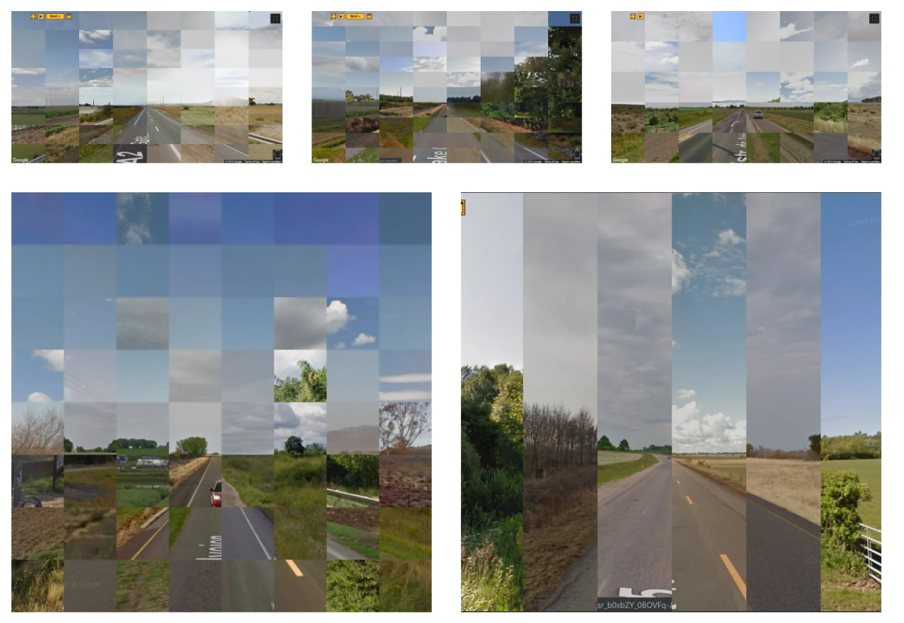

My first post! It took a while to get used to the formatting but I think I have down now. Hopefully I'll be able to transition this material as I customize it more. This is a tutorial/walkthrough on how to make a collage generator with Python, with a neat extension. This generator was a small helper utility from my independent study, which I'll post about later.
While testing out the Google Street View image dataset that I gathered for my DCGAN project, it became clear that the qualities of the image set that made it conducive to nice ML generation also made it suitable for a range of other image applications. Taken from the same single point perspective and lined up accordingly, I toyed around with a simple collage generator that would combine small windows from different images to make a new one.
Here are some of the results of this process: the first three are widescreen collages from the original training screenshots and the bottom ones are from a cropped 1024×1024 dataset.
I originally also planned to use these tiled images as extra training images for my GAN, but at some point I decided that wasn't necessary because the quality of the images had improved to the point where retraining would have been risky. At any rate, I'll try and talk through the development process as best I can. Hopefully over time I will get better at writing these blog posts to talk through my process. With these posts I also hope to reflect and grow on my previous work-- talking through my work here helped me make a lot of important modifications for readability and efficiency. It works pretty well, so if you'd like to generate collages from a set of similar images and don't have a place to start, this is a good bet.
The program uses PIL (Python Image Library) to generate each collage image. We will gather our images, create a blank canvas image, create crop boxes (rectangular coordinates to crop at), and then crop and paste these boxes into the canvas. The input images must all be the same dimensions. The core of the generator is just PIL's crop() function, but as you can see in this thread, it's a little unintuitive to use. The PIL coordinate system starts from the top left corner-- i.e, as x increases, you go to the right, and as y increases, you go down.
The bigger inconvenience is that the coordinate system marks pixels at their top left corner, so there's a lot of potential for off by one errors. For this reason, I ended up creating a box array of lists to construct the boundary specifications, separate from the image crop process. Good practice, but pretty redundant.
Here are the imports and parameters. This program is written in Python 3.8. ImageStat will become useful later.
from PIL import Image, ImageStat
import glob;
import random;
#number of horizontal tiles
wDivs = 8;
#number of vertical tiles
hDivs = 8;
#name your output image here
savename = "MyFirstCollage"
#write your pathname pattern here. This example is a relative path specifying all PNGs in the GSVImage subfolder.
globMatcher = "./GSVImages/*.png"
wDivs specify the number of rectangles wide, and hDivs specifies the number of rectangles tall (a little misleading-- Divs doesn't specify the dividers between each rectangle but rather the integer divisor).
The savename and globMatcher are the output and input file names that should be changed to match your own. glob is a way to select a set of files that match certain criteria. It takes a relative path pattern that can include wildcards ("*"). The easiest way to specify the input files correctly is to put the Python file in the same folder as the images, and then change globMatcher to a wildcard:
globMatcher = "*.png"The dataset I was working with here was a set of about 300 fullscreen Google Street View images, which were 1920x1080. They are all in the "GSVImages" folder as you can see above.


(If you just want to use the collage generator, everything you need to know has been explained-- you can skip to the end to download the Python file).
I will now try to explain each of the steps of the program process. It's a pretty straightforward process: just setups and then pasting rectangles into our canvas.
The first step is to gather the Images into a single array. Using our specified globMatcher, we can find the right files and append them as Image objects.
#Image Collection
imagesArray = [];
for infile in glob.glob(globMatcher):
try:
imagesArray.append(Image.open(infile))
except:
pass;The next step is to determine the size of the image so that we can create the canvas size and the crop boxes correctly. This also serves as a check to make sure imagesArray isn't empty.
#Size
size = imagesArray[0].size
wunit = int(imagesArray[0].width/wDivs);
hunit = int(imagesArray[0].height/hDivs);Now we can assemble the crop box arrays as so:
boxArray = [];
for i in range(0,wDivs):
for j in range(0,hDivs):
boxArray.append([wunit*i,hunit*j,wunit*(i+1), hunit*(j+1)]);This box array will tell us where to crop and paste rectangles from each input image. With all of the setup out of the way, we can now initialize a canvas for our beautiful collage:
canvas = Image.new(mode = "RGBA", size = (width,height))And for each box of our crop grid, we can take a random Image from our array, and paste the corresponding square into the collage. This collage generator takes random images from the input dataset. You cannot handselect images. If you want to handselect images, do it in Gimp or Photoshop and not with Python/Pillow.
#Cropping and Pasting
for i in range(0,wDivs*hDivs):
while True:
choice = random.randint(0,len(imagesArray)-1)
img = imagesArray[choice].crop(boxArray[i]);
canvas.paste(img, tuple(boxArray[i][:2]), img);And finally, we display and save the image with the savename specified above:
canvas.show();
canvas.save(savename+'.png');That was simple! You should see an image collage of the same size appear. Feel free to tweak hDivs and wDivs as necessary to make more or less divisors in the image.

Yet the images that this collage generator creates don't look real enough. Each individually sourced square doesn't have the benefit of understanding what a good final result might look like-- one with consistent tone.
Ideally, we'd want to replicate existing images in tone, but the variety of the image dataset here (different landscapes, different weather and times of the day) make the image squares not strictly interchangeable-- you can see the upper half of a tree suspended in air there. If we were working with a more cohesive subject over the course of a timelapse, then this purely random image selection for each crop box would work; yet we need to add a little bit of bias here. Luckily, Pillow has what we're looking for.
Let's go back and define a new function that can pick better tiles from our image dataset. The brightness() function defined below, using Pillow's ImageStat.StatImage array, will return the average pixel level for each image. This average will serve as a pretty good approximation for brightness over an image.
def brightness(image):
im = image.convert('L')
stat = ImageStat.Stat(im)
return stat.mean[0]In order to approximate the brightness level of an actual image in our final collage, we can use a random image from our dataset as a template. From this template image, we can derive a series of brightness measurements, one for each crop box, and then accept only images with a similar brightness level for each box.
def brightnessProfile(image, boxArray):
brightnesses = [];
for box in boxArray:
img = image.crop(box);
brightnesses.append(brightness(img));
return brightnesses;
bP = brightnessProfile(imagesArray[random.randint(0,len(imagesArray)-1)], boxArray);Great! Now just add something like
bScope = 10to the beginning, and a similarity check to the while loop in the collage assembly:
if abs(brightness(img)-bP[i]) < bScope:
break;Great! Now the images will approximate the target image in brightness.
This makes the generated images a lot more interesting to look at. The variations in brightness are in the right spots, and approximate actual features from the sample.


I hope this was useful/interesting! Full code on Github: Tiling.py
Possible improvements on this collage generator:
This brightness template method probably doesn't work for most use cases. Only very structurally homogeneous image sets with a lot of local variation would really make sense. But I think its really cool for Google Street View images, and I'd be excited to see any other possible applications of the same idea-- with a different template from the input images, perhaps, or a more sensitive similarity metric.